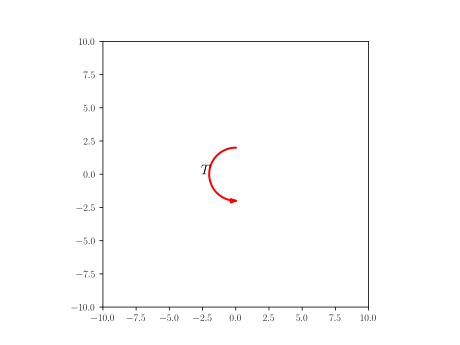

Shapes Reference
List of Shapes
- Line: defines a line providing start and end point
- Rectangle: defines a rectangle providing bottom left corner, x dimension, y dimension
- Triangle: defines a triangle providing three corner
- Circle: defines a circle proving center and radius
- Distance with text: defines a sizing mark with a label
- Text: defines a given text positionned at the provided point
- Cross: defines a cross positionned at the provided point
- Axis: defines an axis at the given point with a given label
- Arc: defines an Arc providing a center point, a radius, a starting angle and an angle (rotates clock-wise)
- Arc_wText: defines an arc with text positionned left (moving clock-wise) of arc half-way
- Arrow1: defines a line with arrow(s) given starting and ending point and arrow termination(s) ->, \<->, \<-
- Force: defines an Indication of a force by an arrow and a text (symbol)
- Wall: defines an hached box given starting, ending point and thickness, filled with a pattern
- Curve: defines a general curve as a sequence of (x,y) coordinates
- Trajectory: defines a general curve as a sequence of Point (subclass Curve)
- Gravity: defines a downward-pointing gravity arrow with the symbol g or user given symbol.
- Moment: defines a Moment arrow with text given text, center and radius
- Text_wArrow: defines Text, but an arrow is drawn from the mid part of the text to some point arrow_tip
- Wheel: defines Hub and spokes Wheel given center, radius, spokes (default 10), inner_radius(default 1/5 of radius)
- Spring: defines a vertical spring, starting at start and with length as total vertical length
- Dashpot: defines a vertical dashpot of height
total_lengthandstartas bottom/starting point.
Line
home Defines a line providing start and end point
Yaml
name: line
shapes:
A: point(-5,-5)
B: point(5,5)
line: Line(A,B)
Python
A = point(-5,-5)
B = point(5,5)
line = Line(A,B)
line.set_name("line")

Rectangle
home Defines a rectangle providing bottom left corner, x dimension, y dimension
Yaml
name: rectangle
shapes:
L: 8
h: 5
p: point(-(L/2),-(h/2))
rectangle: Rectangle(p,L,h)
Python
L = 8
h = 5
p = point(-(L/2),-(h/2))
rectangle = Rectangle(p,L,h)
rectangle.set_name("rectangle")

Circle
home Defines a circle proving center and radius
Yaml
name: circle
shapes:
circle: Circle(point(0,0),5)
Python
circle = Circle(point(0,0),5)
circle.set_name("circle")

Triangle
home Defines a triangle providing three corner
Yaml
name: triangle
shapes:
L: 3.0
W: 4.0
triangle: Triangle(p1=(W/2,0), p2=(3*W/2,W/2), p3=(4*W/5.,L))
Python
L = 3.0
W = 4.0
triangle = Triangle(p1=(W/2,0), p2=(3*W/2,W/2), p3=(4*W/5.,L))
triangle.set_name("triangle")

Distance with text
home Defines a sizing mark with a label
Yaml
name: dwt
shapes:
fontsize: 14
t: r'$ 2\pi R^2 $' # sample text
dwt: Distance_wText((-4,0), (8, 5), t, fontsize)
Python
fontsize=14
t = r'$ 2\pi R^2 $' # sample text
dwt = Distance_wText((-4,0), (8, 5), t, fontsize)
dwt.set_name("dwt")

Text
home Defines a given text positionned at the provided point
Yaml
name: text
shapes:
text: Text(r'$c$', point(0,0))
Python
text = Text(r'$c$', point(0,0))
text.set_name("text")

Cross
home Defines a cross positionned at the provided point
Yaml
name: cross
shapes:
cross: Cross(point(0,0))
Python
cross = Cross(point(1,0))
cross.set_name("cross")
Axis
home Defines an axis at the given point with a given label
Yaml
name: axis
shapes:
axis: Axis((0,0), 5, 'x', rotation_angle=0)
Python
axis = Axis((0,0), 5, 'x', rotation_angle=0)
axis.set_name("axis")

Arc
home Defines an Arc providing a center point, a radius, a starting angle and an angle (rotates clock-wise)
Yaml
name: arc
shapes:
center: point(0,0)
radius: 1
angle: 120
start_angle: 180-angle
arc_angle: angle
arc: Arc(center, radius, start_angle, arc_angle)
Python
center = point(0,0)
radius = 1
angle = 120
start_angle = 180-angle
arc_angle = angle
arc = Arc(center, radius, start_angle, arc_angle)
arc.set_name("arc")

Arc_wText
home Defines an arc with text positionned left (moving clock-wise) of arc half-way
Yaml
name: arc_wtxt
shapes:
center: point(0,0)
radius: 1
angle: 120
start_angle: 180-angle
arc_angle: angle
arc_wtxt: "Arc_wText(r'$<bslash>theta$', center, radius, start_angle, arc_angle)"
Python
center = point(0,0)
radius = 1
angle = 120
start_angle = 180-angle
arc_angle = angle
arc_wtxt = Arc_wText(r'$\theta$', center, radius, start_angle, arc_angle)
arc_wtxt.set_name("arcwtxt")

Arrow1
home defines a line with arrow(s) given starting and ending point and arrow termination(s) ->, \<->, \<-
Yaml
name: arrow1
shapes:
start: point(0,0)
end: point(5,5)
arrow1: Arrow1(start, end, style='<->')
Python
start = point(0,0)
end = point(5,5)
arrow1 = Arrow1(start, end, style='<->')
arrow1.set_name("arrow1")
Force
home defines an Indication of a force by an arrow and a text (symbol)
Yaml
name: force
shapes:
x: 0
y: 0
contact: point(x, y)
vector: point(-3,-5)
force: Force(contact - vector, contact, r'$Force$', text_pos='start')
Python
x = 0
y = 0
contact = point(x, y)
vector = point(-3,-5)
force = Force(contact - vector, contact, r'$Force$', text_pos='start')
force.set_name("force")
Wall
home defines an hached box given starting, ending point and thickness, filled with a pattern
Yaml
name: wall
shapes:
theta: 30
L: 8
B: point(L-4,-2) # wall right end
A: point(-4,tan(radians(theta))*L-2) # wall left end
wall:
formula: Wall(x=[A[0], B[0]], y=[A[1], B[1]], thickness=-0.5,transparent=False)
style:
linecolor: black
Python
theta = 30
L = 8
B = point(L-4,-2) # wall right end
A = point(-4,tan(radians(theta))*L-2) # wall left end
wall= Wall(x=[A[0], B[0]], y=[A[1], B[1]], thickness=-0.5,transparent=False)
wall.set_linecolor('black')
wall.set_name("wall")
Curve
home defines a general curve as a sequence of (x,y) coordinates
Yaml
curve="""\
name: curve
shapes:
N: 100
x: np.linspace(-2.0, 2.0, N)
y: x**3
curve: Curve(x,y)
"""
Python
N = 100
x = np.linspace(-2.0, 2.0, N)
y = x**3
curve = Curve(x,y)
curve.draw()
curve.set_name("curve")

Trajectory
home defines a general curve as a sequence of Point (subclass Curve)
Yaml
trajectory="""\
name: trajectory
shapes:
P1: Point(1,-1)
P2: P1 + Point(0,2)
P3: P2 + Point(-2,0)
P4: P3 + Point(0,-2)
psq: |
[P1,P2,P3,P4]
trajectory: Trajectory(psq)
"""
Python
P1 = Point(1,-1)
P2 = P1 + Point(0,2)
P3 = P2 + Point(-2,0)
P4 = P3 + Point(0,-2)
psq = [P1,P2,P3,P4]
trajectory = Trajectory(psq)
trajectory.draw()
curve.set_name("trajectory")

Gravity
home defines a downward-pointing gravity arrow with the symbol g or user given symbol.
Yaml
gravity="""
name: gravity
shapes:
c: point(0,0)
r: 2
gravity:
formula: Gravity(c, r, text='$Mg$')
"""
Python
c = point(0,0)
r = 2
gravity = Gravity(c, r, text='$Mg$')
gravity.set_name("gravity")

Moment
home defines a Moment arrow with text given text, center and radius.
Yaml
moment="""
name: moment
shapes:
moment: Moment("$T$", point(0,0), 2)
"""
Python
moment = Moment("$T$", point(0,0), 2)
moment.shape_name="moment"

Text_wArrow
home Text, but an arrow is drawn from the mid part of the text to some point arrow_tip
Yaml
txtarrow="""
name: txtarrow
shapes:
txtarrow: Text_wArrow("$Text$", point(0,0), point(2,2))
"""
Python
txtarrow = Text_wArrow("$Text$", point(0,0), point(2,2))
txtarrow.set_name("txtarrow")
Wheel
home Hub and spokes Wheel given center, radius, spokes (default 10), inner_radius(default 1/5 of radius)
Yaml
wheel="""
name: wheel
shapes:
wheel: Wheel(point(0,0), 5)
"""
Python
wheel = Wheel(point(0,0), 5)
wheel.set_name("wheel")
Spring
home Specify a vertical spring, starting at start and with length as total vertical length
Yaml
spring="""
name: spring
shapes:
spring:
formula: Spring(point(0,0),5)
style:
linecolor: black
linewidth: 1
"""
Python
spring = Spring(point(0,0),5)
spring.set_linecolor('black')
spring.set_linewidth(1)
spring.set_name("spring")

Dashpot
home Defines a vertical dashpot of height total_length and start as bottom/starting point.
Yaml
dashpot="""
name: dashpot
shapes:
dashpot: Dashpot(point(0,0),5)
"""
Python
dashpot = Dashpot(point(0,0),5)
dashpot.set_name("dashpot")
Code to display the above defined shapes
home In order to display the various shapes, use the following code in a jupyter notebook
[1]: %matplotlib widget
[2]: from pysketcher import *
[3]: from math import tan, radians, sin, cos # needed for python code
[4]: import numpy as np
[6]: drawing_tool.set_coordinate_system(xmin=-10, xmax=10,ymin=-10, ymax=10,axis=True)
[5]: drawing_tool.mpl.gcf().canvas
for Yaml, you need to add those extra steps
head = """\
libraries: ["from math import tan, radians, sin, cos","from pysketcher import *","import numpy as np"]
myfig={}
sketch = Sketch(myfig)
sketch.append(head)
The above code initialize myfig sketch space loading into it libraries references so samples can use tan, radians, si, cos and all the objects defined in pysketcher (the module name of jupytersketcher) and numpy as well: this is used by the yaml definition of shapes
Yaml
myfig={}
sketch="""
# put here the yaml 'object' definition
"""
drawing_tool.erase()
sketch.append(sketch)
# replace 'object' by the actual one
d = myfig['object'].draw()
drawing_tool.display()
display(SVG(Sketch.matplotlib2SVG()))
Python
drawing_tool.erase()
# put the code of the object case here
# replace object by the actual name line, rectangle, circle...
object.draw()
drawing_tool.display()
display(SVG(Sketch.matplotlib2SVG()))